Description
This package provides a modern, all-in-one web interface to configure OpenVPN servers and clients quickly. Featuring a built-in key generator, setup wizard, Flood Guard protocol protection, DDNS, SSL-VPN, and profile import/export via QR-code, your VPN is ready to use immediately.
Thanks to this simple application, anyone can build a professional SSL/TLS-VPN network now. You do not need to understand complex crypto keys or write config files. The app does all the hard background work for you. With the step-by-step wizard, you can create secure VPN connections for travel and mobile devices in seconds.
Setting up your mobile phone is incredibly easy—just scan the secure QR-code on your screen with your smartphone camera. In the past, running a VPN behind internet provider modems was very complex. To fix this, the app includes smart Double-NAT detection and automated live port checking. This makes the installation completely effortless and brings professional, enterprise-grade VPN features straight to standard OpenWrt routers.
High Performance for Affordable Hardware: You don't need expensive enterprise equipment. Thanks to native OpenVPN Data Channel Offload (DCO) integration and our automatic MTU engine, the app achieves outstanding throughput rates—matching the speed of Wireguard even on budget-friendly wireless access points.
📊 Real-World Performance Benchmarks (iperf3)
We tested the real-world performance of luci-app-openvpn-plus using two affordable Zyxel NWA50AX Pro wireless access points. Both devices run as pure APs behind standard internet provider modems.
Even though the traffic has to pass through Double-NAT and simple port forwardings, the performance matches expensive enterprise hardware:
🔹 Test A: Site-to-Site Tunnel (UDP Mode)
- Setup: Zyxel AP ↔️ WAN Router ↔️ Internet ↔️ WAN Router ↔️ Zyxel AP
- Network Status: Both routers are behind Double-NAT.
- Benchmark Result: 450+ Mbit/s 🚀
The crypto load is perfectly split across multiple CPU cores thanks to OpenVPN DCO and our automatic MTU engine.
🔸 Test B: Mobile Client / Roadwarrior (TCP / SSL-VPN Mode)
- Setup: Zyxel AP ↔️ WAN Router ↔️ Internet ↔️ Smartphone with OpenVPN App
- Network Status: The server AP is behind Double-NAT
- Benchmark Result: 200+ Mbit/s 📱
This is the absolute maximum for a single CPU core under TCP. It bypasses strict public firewalls easily while keeping your smartphone connection incredibly fast.
Features
- ✓Easy Setup: Build fully working OpenVPN servers or clients in seconds.
- ✓Connection Wizard: Simple step-by-step setup for mobile phones, laptops, and router-to-router networks (Site-to-Site).
- ✓Enterprise-Grade Speeds: Out-of-the-box support for OpenVPN Data Channel Offload (DCO) to match Wireguard performance.
- ✓Smart MTU Engine: Automatically calculates and tunes packet sizes to eliminate fragmentation and balance multi-core CPU load.
- ✓Secure Site-to-Site Routing: Built-in iroute() hook with dynamic Anti-Loop Prevention to prevent kernel freezes.
- ✓Instant Mobile QR Scan: Instantly import configurations into the OpenVPN Mobile Connect app via QR-code.
- ✓Effortless Installation: Smart Double-NAT detection and automated live port-open checking.
- ✓OpenVPN over TCP 443 (SSL-VPN): Special travel presets to bypass strict public firewalls by hiding traffic as HTTPS.
- ✓Built-in DDNS Daemon: Automatic dynamic DNS support for DuckDNS, IPv64, dynv6, Dynu, and No-IP.
- ✓Flood Guard Protection: Detects and blocks malicious requests and port scanners directly in the Linux kernel.
- ✓Automated Firewall Zones: Automatic creation of all required firewall zones, traffic rules, and forwardings.
- ✓High-Security Keygen: Automatic generation of RSA-2048/ECC-Prime256, DH params, and TLS-crypt-v2.
- ✓Hardware Crypto Optimization: Smart auto-cipher selection (AES-GCM for new chips, ChaCha20 for older hardware).
- ✓Integrated Key Editor: View, edit, and check key files or expiration dates directly in your browser.
- ✓Profile Import & Export: Upload existing .ovpn files or multi-key configurations instantly.
- ✓Clear Status Table: Quick overview of active tunnels, PIDs, ciphers, and live bandwidth usage.
Screenshots
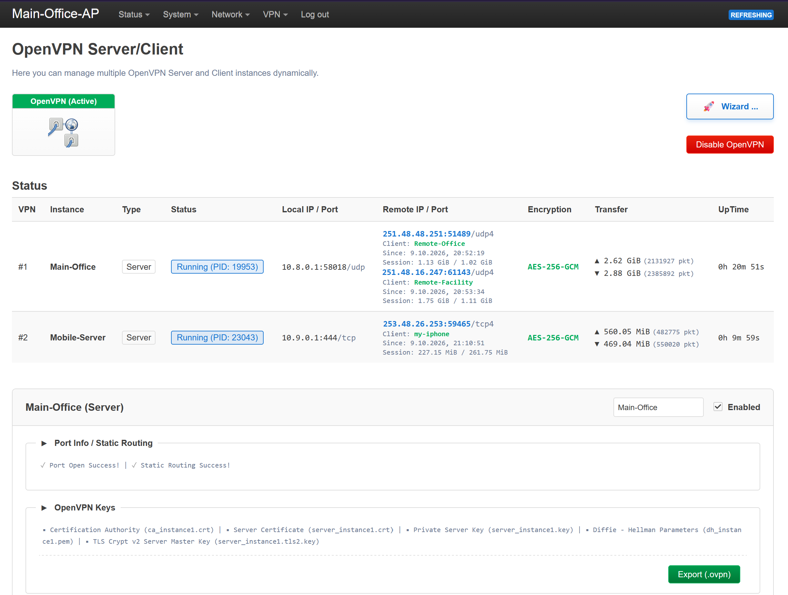
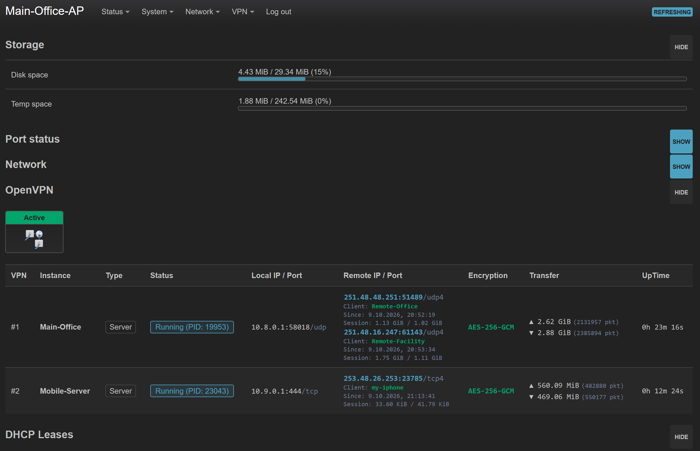
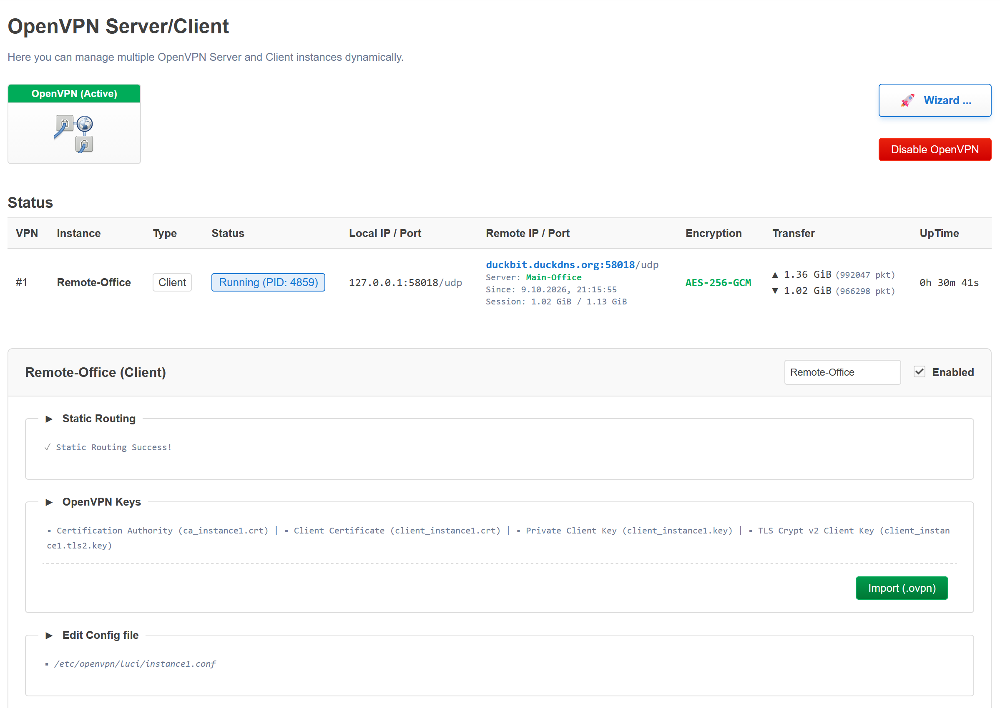
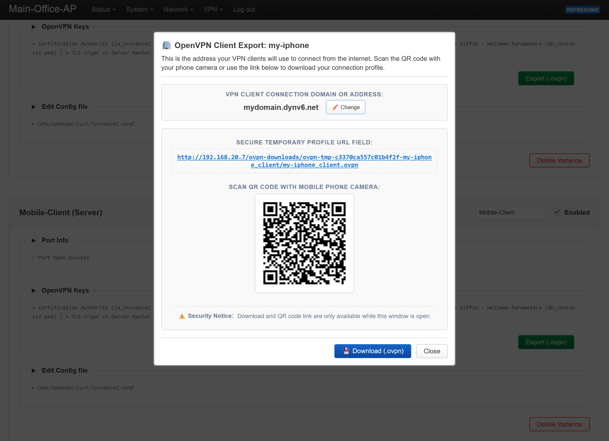
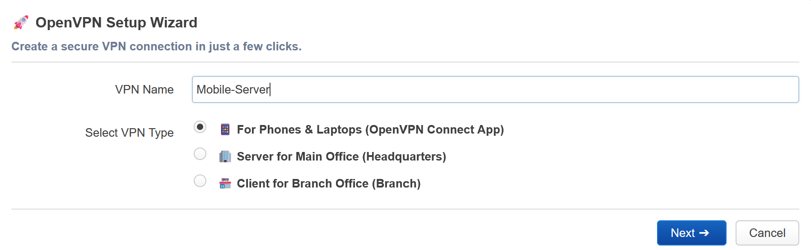
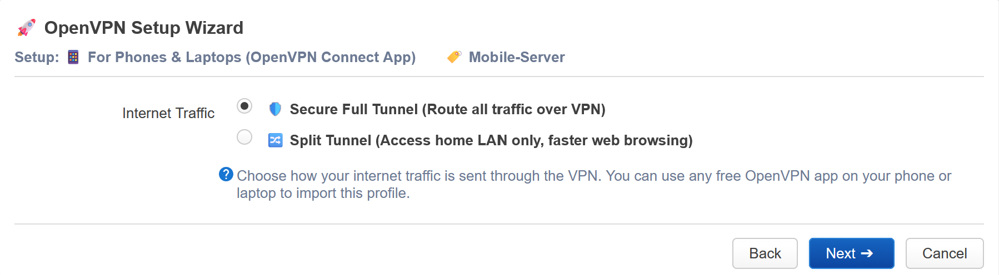
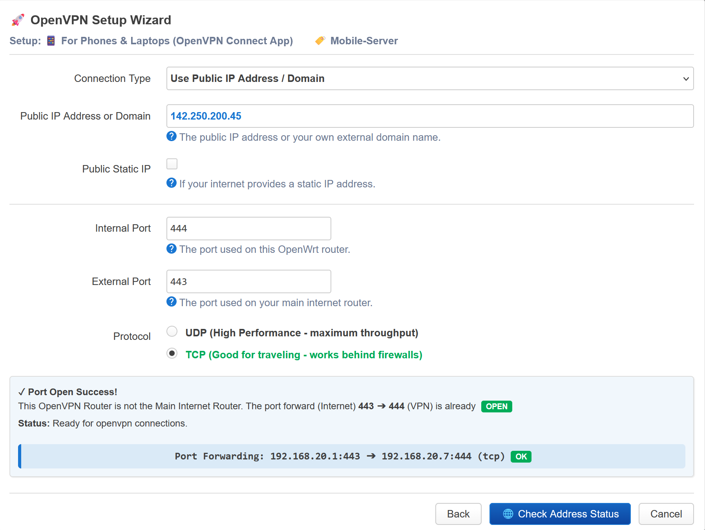
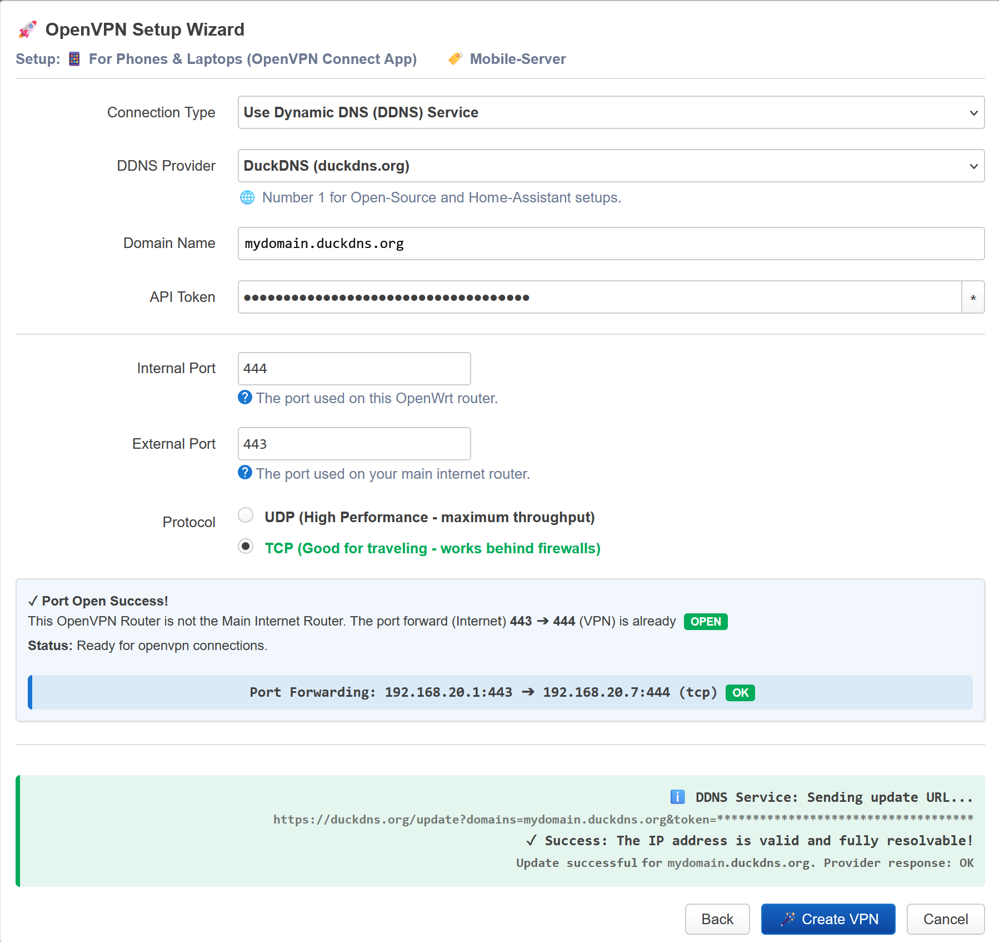
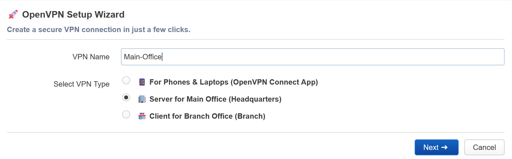
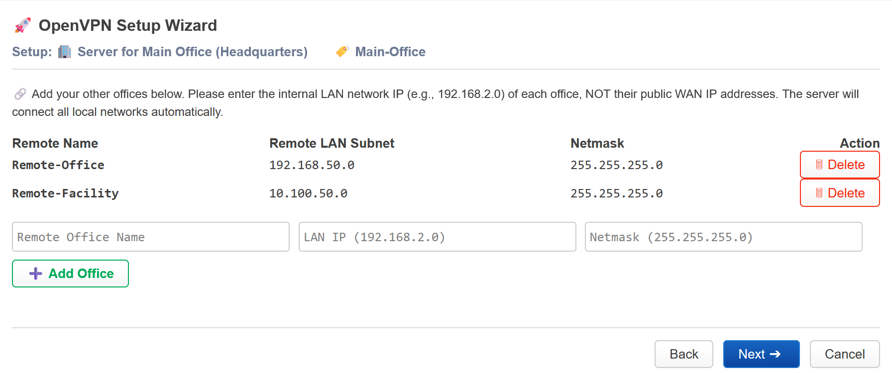
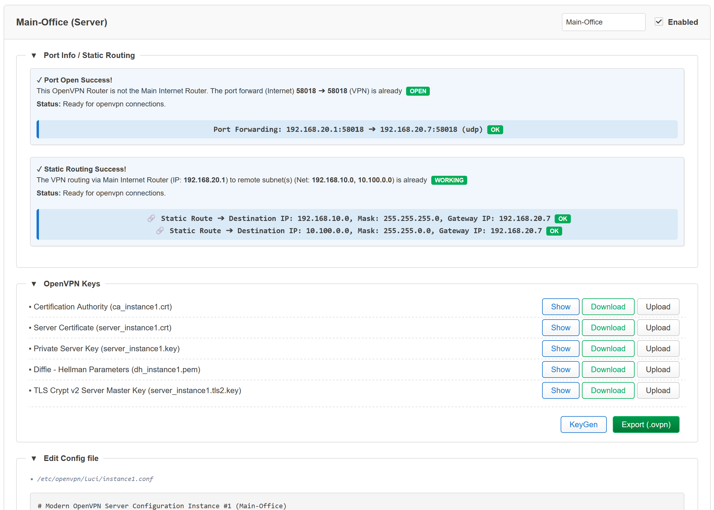
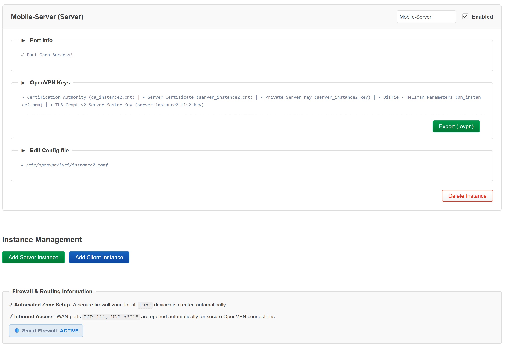
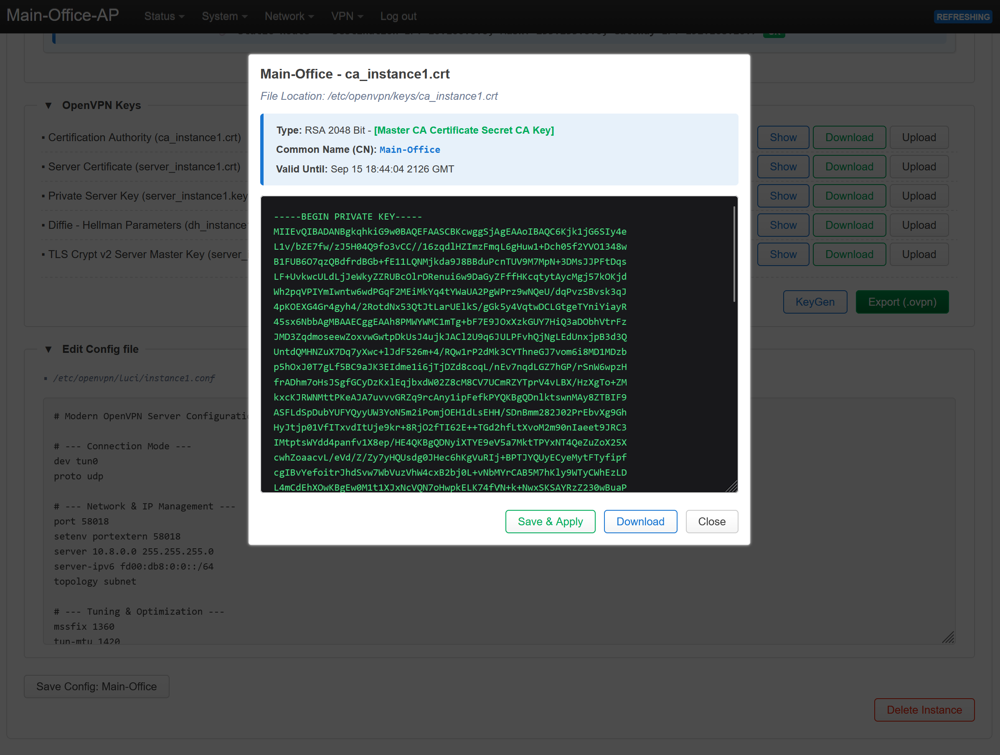
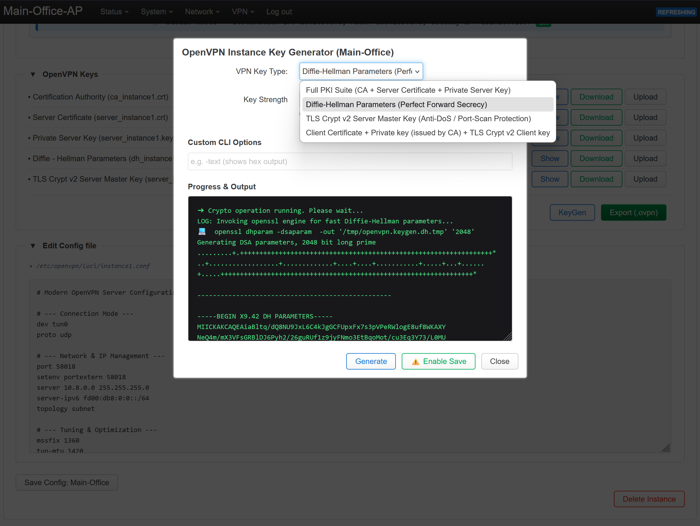
Configuration Layout
The application manages settings inside /etc/config/openvpn:
config openvpn 'instance1'
option enabled '0'
option role 'server'
option config '/etc/openvpn/luci/instance1.conf'Directory Structure
luci-app-openvpn-plus/ ├── Makefile ├── LICENSE ├── README.md ├── po/ │ ├── de/ │ │ └── luci-app-openvpn-plus.po │ ├── zh-cn/ │ │ └── luci-app-openvpn-plus.po ├── screenshots/ └── root/ ├── etc/ │ ├── config/ │ └── hotplug.d/ │ │ ├── iface/ │ │ │ └── 35-luci-app-openvpn-plus-bootup │ │ └── openvpn/ │ │ └── 35-luci-app-openvpn-plus-lifecycle │ ├── openvpn/ │ │ ├── keys/ │ │ └── luci/ │ │ ├── default.nft │ │ ├── client.default.conf │ │ └── server.default.conf ├── usr/ │ ├── libexec/ │ │ └── luci-app-openvpn-plus │ └── share/ │ ├── luci/menu.d/ │ │ └── luci-app-openvpn-plus.json │ └── rpcd/acl.d/ │ ├── luci-app-openvpn-plus.json │ └── luci-app-openvpn-plus-status.json └── www/ └── luci-static/resources/view/ ├── status/include/ │ └── 35_openvpn.js └── vpn/ ├── openvpn.js ├── openvpn-keygen.js ├── openvpn-status.js └── openvpn-wizard.js